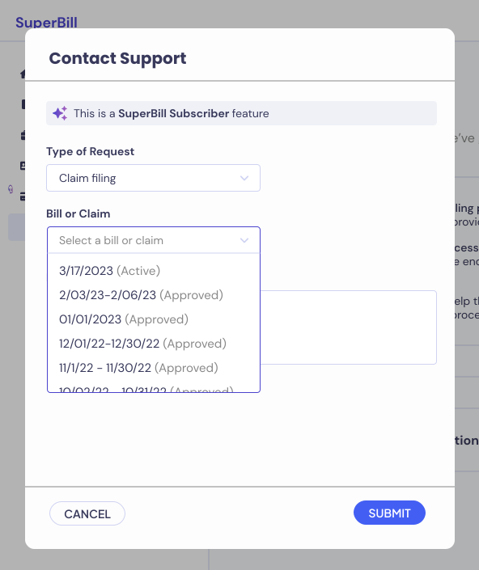

SuperPay
One of SuperBill’s first products was SuperPay, where patients receive free out-of-network claim filing when they pay their provider through us.
Read on to see some project highlights, metrics, things I’m proud of, and… why it all failed (but also why that’s OK!).
Perks for the patient: they don’t have to deal with the confusing, complicated process of filing claims to get their reimbursement money - a check will show up like magic!
Perks for the provider: they don’t have to worry about sending “superbills” to their patients, and they get paid upfront for their services.
Perks for us: we get a tiny % of the money from interchange (we pay the provider immediately through a virtual credit card, and then collect money from the patient) without having to charge the provider OR the patient a fee. Truly a win-win-win
Read on to see some project highlights, metrics, things I’m proud of, and… why it all failed (but also why that’s OK!).
TLDR
I designed (and helped implement, market, and PM) a patient and provider portal for automated out-of-network claim filing. We reached a point of over 1,000 providers and patients and $250k in transactions, but ultimately pivoted due to struggles with patient sign ups. Learned a lot, cried a little, gained experience to be a better designer and partner in the next project.
Provider Portal
Goal: Encourage specialty practice providers (i.e. mental health practitioners, dietitians) to get their out-of-network patients to join SuperPay. The provider doesn’t have to do anything other than tell their patients to sign up – in fact, SuperPay results in less busy-work because now they don’t have to worry about claims.
Challenges: Getting providers to trust us, be hyped about SuperPay, and encourage their patients to sign up because ultimately (after various experiments and campaigns), we found we had to rely on the provider to be the one telling their patients to join SuperPay.
Challenges: Getting providers to trust us, be hyped about SuperPay, and encourage their patients to sign up because ultimately (after various experiments and campaigns), we found we had to rely on the provider to be the one telling their patients to join SuperPay.
Lightweight provider onboarding experience + portal
The ideal state is: a provider signs up, links their EHR (which allows us to get their list of patients), enables “auto-invite” which lets us send a message on their behalf to all their current and future out-of-network patients, and then they never have to come back here again. Obviously they’ll want some sort of visibility to who has signed up, etc., so we built a super lightweight portal with general information. I’m happy to say we hit the sweet spot here where providers were happy with having visibility into their patients’ sign-up process but didn’t feel like they had “another thing to do”


Encouraging patient activation
A couple provider-focused experiments to increase patient activation included:
The ideal state is: a provider signs up, links their EHR (which allows us to get their list of patients), enables “auto-invite” which lets us send a message on their behalf to all their current and future out-of-network patients, and then they never have to come back here again. Obviously they’ll want some sort of visibility to who has signed up, etc., so we built a super lightweight portal with general information. I’m happy to say we hit the sweet spot here where providers were happy with having visibility into their patients’ sign-up process but didn’t feel like they had “another thing to do”
Hover for annotation
Encouraging patient activation
A couple provider-focused experiments to increase patient activation included:
Provider sign-up perk: Literally paying the provider $50 per patient who completes onboarding. Take our money!!

Hover for annotation
Auto-invite capability: A one-click button (which they can turn off), that automatically invites all future out-of-network patients

Materials and hanouts: Stuff for the provider to give their patients. Also makes us look more legit.


In-person happy hours with providers: Exhausting for me as an introvert, but thankfully we partnered with a couple mental health practitioners who helped us run the event. Also a nice chance for sneaky user research.

Patient Portal
Goal: Encourage patients to sign up and provide payment + insurance information. That’s really all they need to do, and SuperPay benefits will kick in - they don’t need to come back to the portal again.
Challenges: Convincing people to give us their credit card / bank information - obviously folks will drop off when they reach a payment stage, and SuperPay won’t work unless patients tell us how we can charge them for their visits.
Also, ensuring folks enter their insurance information correctly. Claim filing doesn’t work (and results in lots of customer success headaches) when even a silly thing like the street address is incorrect
Challenges: Convincing people to give us their credit card / bank information - obviously folks will drop off when they reach a payment stage, and SuperPay won’t work unless patients tell us how we can charge them for their visits.
Also, ensuring folks enter their insurance information correctly. Claim filing doesn’t work (and results in lots of customer success headaches) when even a silly thing like the street address is incorrect
Robust and informational payment step
People are not going to enter their credit card if they don't feel compelled to, don't know what they'll be charged for, or don't trust the product!

Hover for annotation
Hover for annotation
Hover for annotation
Lightweight, transparent portal
Our ideal user would create their account, add their payment info and insurance card, and never have to open SuperPay again. Our users don’t want more overhead, the whole reason they join SuperPay is so that they have 1 less thing to worry about (claim-filing). So, we kept the Patient portal lightweight and only showed information you needed to know, with access to detailed information if requested.

Marketing, Coding, PM-ing, oh my!
Folks at startups often wear many hats, and I happened to aquire the marketing, coding, and PM beanies.
As the marketing person...
I built and managed the external marketing page, recorded product demo videos for potential clients, collaborated with an SEO agency to develop our web traffic strategy, and created marketing collateral for providers.
As a front-end dev dabbler ...
(which I define as someone who can type “yarn run start-prod” in terminal but not really know what that means), I took on a few small features that actually required some back-end work! Here’s a thing I designed and implemented all by myself:
As a mix of a product + project manager...
(I certainly wasn’t full-on PM-ing - the founders took on that role), I created tickets, prioritized development work, and reviewed everything before deployment.
I built and managed the external marketing page, recorded product demo videos for potential clients, collaborated with an SEO agency to develop our web traffic strategy, and created marketing collateral for providers.
As a front-end dev dabbler ...
(which I define as someone who can type “yarn run start-prod” in terminal but not really know what that means), I took on a few small features that actually required some back-end work! Here’s a thing I designed and implemented all by myself:

Hover for annotation
Hover for annotation
As a mix of a product + project manager...
(I certainly wasn’t full-on PM-ing - the founders took on that role), I created tickets, prioritized development work, and reviewed everything before deployment.
Metrics + Lessons learned
Primary metric for success: Percentage of users who fully complete onboarding (out of all the patients who receive invite email)
We built the entire SuperPay platform in 2 weeks so that we could get the program up-and-running with our 3 “beta tester” providers. I used Retool to track our onboarding rates, and found the following trend after the first month of SuperPay

The founders and I figured that increasing invites sent was the easiest to tackle, which we did through provider incentives + improved messaging. I also personally wanted to improve the drop-off rate in the sign-up flow by making the account creation + payment information as easy as possible, and make us seem as trustworthy as possible since no one wants to put their credit card down on a site that doesn’t feel legit.
3 months later, this is what the patient onboarding looked like

Key things to note because the chart doesn't say much at first glance:
Reduced Sign-Up drop-off from 32% to 6% My UI improvements worked! Before, about a third of our patients did not complete sign-up (between stages "Sign Up Started" and "Sign Up Completed"), presumably on the payment step. With the payment page improvements, we got that down to just 6%.
An increase in "Invites Sent" did not lead to the desired increase in "Sign Ups Started": In fact, the drop-off rate actually got worse RIP. Before, 78% of the patients who received invites started signing up. And though we did dramatically increase our invites sent and our percentage of patients signed up went up, only 57% of invited patients actually started sign-ups (29 of 51%). No matter what we tried, we just couldn't get patients to start signing up, which ultimately led to the project's demise.
I'm proud of...
Providers and patients truly loving the work we did. We delivered what we promised, and our users were happy. What more could you ask for as a product designer? (whispers, *profitability and better clickthrough rate*)
Reducing our support team’s product-related tickets to 0. I maintained a close relationship with our customer success / support team, and anytime they received product related complaints (“help, my log-in credentials aren’t working and I’m positive I’m typing it in correctly”), I made swift analyses and changes (“oh, it’s probably because the provider is trying to sign in on the patient portal. Since we can’t combine them due to dev reasons, let’s make it more obvious which site you’re on, and suggest a link to the other portal if you hit the log-in error message).
Advocating for good UX. As the only designer and the one responsible for our users’ experiences, I am proud of how I researched and came up with my own ideas for features, spoke up when I disagreed with our founders, and put the users first (though sometimes I think if we were more aggressive about company strategies and less "pure good for our users", we could have been more successful business-wise).
So... this failed though, right?
Ultimately, SuperPay didn’t work out because we were never able to get enough patients to fully onboard, but hey I learned a lot and this project led us to where we are today.
We actually found our next (currently-still-alive) project in the middle of all this. While filing out-of-network claims for patients in SuperPay, we found that each benefits verification call we made took over 30 minutes (working through the insurance company’s automated system, waiting on hold, etc.), and we desperately needed to streamline this process to remain profitable. With recent developments in AI, we built our own “robodialer” who would call insurance companies and output the benefits information to us. This worked quite marvelously, and we found that practices, billers and RCM companies all needed the same thing, just different scenarios. Thus began the SuperDial journey.
We actually found our next (currently-still-alive) project in the middle of all this. While filing out-of-network claims for patients in SuperPay, we found that each benefits verification call we made took over 30 minutes (working through the insurance company’s automated system, waiting on hold, etc.), and we desperately needed to streamline this process to remain profitable. With recent developments in AI, we built our own “robodialer” who would call insurance companies and output the benefits information to us. This worked quite marvelously, and we found that practices, billers and RCM companies all needed the same thing, just different scenarios. Thus began the SuperDial journey.
Previous Project
SuperDial
Next Project
Clarative